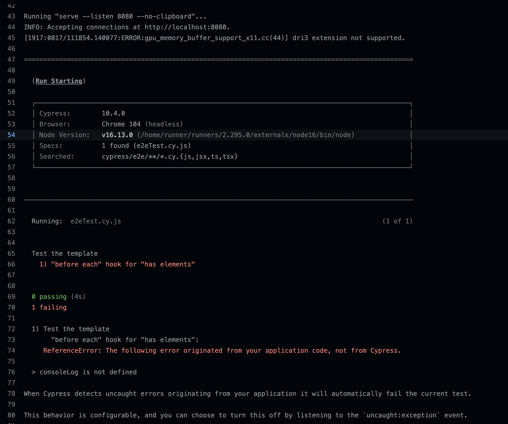

Problem 0
We have provided a JavaScript file at js/scripts.js, but that file isn't currently being loaded. Update index.html so it is included with the page
Problem 1
Lets learn how to run tests and submit an assignment!
In js/scripts.js, remove the first line Remove me entirely!. Commit your changes and push to Github classroom. Go to your Github classroom repo for this assignment. Go to the Actions tab and find the (intentionally) failing E2E on Chrome tests.
Screenshot the failing test details, this will be one of the images you submit to canvas Name the file problem1a.(png, jpg, etc) It will resemble this:
Hint, you can run tests without pushing to github by temporarily stopping your application (ctrl-c) and typing npm run codespace:test in the terminal. This info also in the
"Tech: Assignments, Github, Etc." page in Canvas
Then fix the tests
In js/script.js, uncomment the line beneath // uncomment below to fix tests, and this will fix the title.
Push the updated branch to Github and make a screenshot of it passing tests. Name the file problem1b.(png, jpg, etc) which will get uploaded to the Canvas assignment.
Problem 2
Console log can accept multiple arguments. It's recommended to use the first argument to describe what you're logging, and the second for the actual argument For example:
console.log('some variable', theActualVariable)In js/script.js: inside the demonstrateConsoleLog() function, add a call to console log where the first argument explains what you're outputting, and the next argument is variable2
Click the "Console log variable2" button for to output this to your JS console.
Screenshot your JS console with the console log output, name the file problem2.(png, jpg, etc) and include this in your Canvas submission.
Note that console.log() is an invaluable tool while developing, but from Lecture 3 onward, the autograder will fail if you submit code without removing them.
Problem 3
In js/script.js, add a new line to the end of the demonstrateDebugger() function. This line should read
debugger;When you click the "Make the debugger work" button the browser should stop execution where you placed that new line. Give the screenshot the filename problem3.(png, jpg, etc), this will also be uploaded to your Canvas assignment.